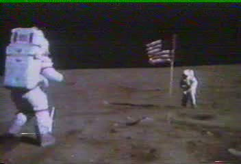
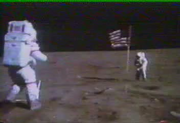
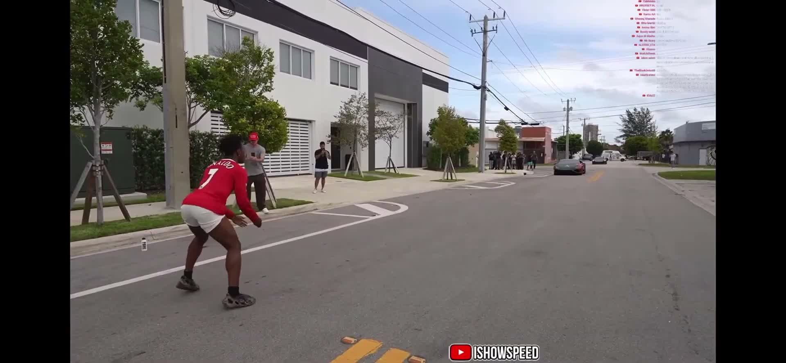

One system for any clip
It is one general system, not a script for one clip. Nothing in the code is tuned to a particular video: for each clip Muse Spark works out from the frames what a viewer would doubt, finds objects of known size and their sourced sizes, and plans the checks (a free flight against the world’s gravity, a size or speed against a sourced human range, a step rate against a natural clock). During the hackathon we verified it end to end on a limited set of clips: the ones below.
Limits. This is a working concept, not yet proven on every kind of clip. It reached right verdicts end to end on three clips: the Apollo clip, our sped-up copy and a handheld street jump. The street jump needed several runs and two new general rules: the agent first took a hand on the car from small frames without checking its own masks, and the jumper’s tucked legs needed a wider error budget. With both rules in the briefs, the regenerated code measured the flight. A new kind of clip may still need new rules.
average of 53 live runs
Rebuilt from text
There is no hand-written code. The only human-written part is a plain-English specification, 15 briefs (the owner’s requests, turned into briefs by Muse Wonder). Muse Spark (Meta) generates every part of the system from them through Muse Code, one part at a time, and the full test suite (1,000+ tests) checks each generation. Anyone can rebuild the whole system from the briefs with tools/dev_loop --part NN. When a run went wrong, we changed the brief, not the code.
last generation of each part
Analysed clips

Apollo 16, the salute hop
NASA footage, public domain
"Do the bouncing and hopping motions fall the way they should in Moon gravity?"
Realistic on the Moong = 1.65 ± 0.10 m/s² · Moon 1.62
Open the analysis →

The same clip, sped up ×2.46
Our own test fake, made from the NASA clip
"Is this hopping motion realistic on the Moon?"
Not real speed · sped up ×2.43on its own the clip fits Earth: g = 9.58 ± 0.65 m/s²
Open the analysis →

IShowSpeed jumps over a Lamborghini
Clip by IShowSpeed, original on Instagram
"Could a person really jump clean over a moving sports car on a street?"
Realistic on Earthg = 10.7 ± 1.1 m/s² · Earth 9.81
Open the analysis →